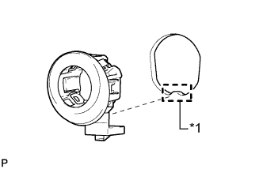
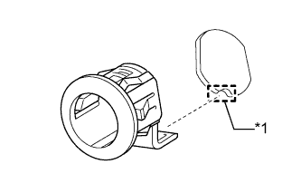
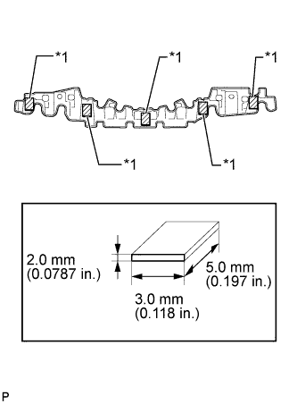
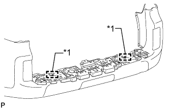

REAR BUMPER > REASSEMBLY |
| 1. INSTALL REAR BUMPER PAD LH (w/ No. 2 Energy Absorber) |
| Item | Temperature |
| Rear Bumper Cover | 20 to 30°C (68 to 86°F) |
When using a new rear bumper cover:
Clean the rear bumper cover surface.
Using a heat light, heat the rear bumper cover surface.
When reusing the rear bumper cover:
Using a heat light, heat the rear bumper cover surface.
Remove the double-sided tape from the rear bumper cover.
Wipe off any tape adhesive residue with cleaner.
 |
Install a new rear bumper pad.
Remove the peeling paper from the face of a new rear bumper pad.
Align the rear bumper pad with the mark-off line of the rear bumper.
Install the rear bumper pad.
| 2. INSTALL REAR BUMPER PAD RH (w/ No. 2 Energy Absorber) |
| 3. INSTALL REAR BUMPER PAD |
| Item | Temperature |
| Rear Bumper Cover | 20 to 30°C (68 to 86°F) |
When using a new rear bumper cover:
Clean the rear bumper cover surface.
Using a heat light, heat the rear bumper cover surface.
When reusing the rear bumper cover:
Using a heat light, heat the rear bumper cover surface.
Remove the double-sided tape from the rear bumper cover.
Wipe off any tape adhesive residue with cleaner.
Install a new rear bumper pad.
Remove the peeling paper from the face of a new rear bumper pad.
Align the rear bumper pad with the mark-off line of the rear bumper.
Install the 4 rear bumper pads.
| 4. INSTALL BACK UP LIGHT ASSEMBLY LH |
Connect the connector.
Attach the 2 claws and clamp to install the light.
Install the 2 nuts.
| 5. INSTALL BACK UP LIGHT ASSEMBLY RH |
| 6. INSTALL REAR BUMPER PROTECTOR SUB-ASSEMBLY LH |
Attach the guide.
Install the rear bumper protector with the screw.
| 7. INSTALL REAR BUMPER PROTECTOR SUB-ASSEMBLY RH |
| 8. INSTALL NO. 1 ULTRASONIC SENSOR RETAINER (w/ LEXUS Parking Assist-sensor System) |
|  |
Align the keyhole and protrusion as shown in the illustration.
Install the ultrasonic sensor retainer to the front bumper cover.
| *1 | Keyhole |
| 9. INSTALL NO. 2 ULTRASONIC SENSOR RETAINER (w/ LEXUS Parking Assist-sensor System) |
|  |
Align the keyhole and protrusion as shown in the illustration.
Install the ultrasonic sensor retainer to the front bumper cover.
| *1 | Keyhole |
| 10. INSTALL NO. 1 ULTRASONIC SENSOR (w/ LEXUS Parking Assist-sensor System) |
Attach the 2 claws to install the No. 1 ultrasonic sensor.
Connect the connector.
| 11. INSTALL ULTRASONIC SENSOR CLIP (w/ LEXUS Parking Assist-sensor System) |
Attach the 4 claws to install the ultrasonic sensor clip.
| 12. INSTALL NO. 5 FLOOR WIRE (w/ LEXUS Parking Assist-sensor System) |
w/o Rear Fog Light:
Attach the 6 clamps to install the No. 5 floor wire.
Connect the 3 connectors.
w/ Rear Fog Light:
Attach the 6 clamps to install the No. 5 floor wire.
Connect the 4 connectors.
| 13. INSTALL NO. 5 FLOOR WIRE (w/o LEXUS Parking Assist-sensor System) |
w/o Rear Fog Light:
Attach the 4 clamps to install the No. 5 floor wire.
Connect the 2 connectors.
w/ Rear Fog Light:
Attach the 4 clamps to install the No. 5 floor wire.
Connect the 3 connectors.
| 14. INSTALL NO. 4 FLOOR WIRE (w/ LEXUS Parking Assist-sensor System) |
| 15. INSTALL NO. 4 FLOOR WIRE (w/o LEXUS Parking Assist-sensor System) |
| 16. INSTALL REAR BUMPER CENTER BRACKET |
Attach the 4 claws to install the rear bumper center bracket.
Install the 2 outside moulding retainers and 2 retainers.
| 17. INSTALL REAR BUMPER ENERGY ABSORBER |
| Item | Temperature |
| Rear Bumper Energy Absorber | 20 to 30°C (68 to 86°F) |
When using a new rear bumper cover:
Clean the rear bumper cover surface.
Using a heat light, heat the rear bumper cover surface.
When reusing the rear bumper cover:
Using a heat light, heat the rear bumper cover surface.
Remove the double-sided tape from the rear bumper cover.
Wipe off any tape adhesive residue with cleaner.
When reusing the rear bumper energy absorber:
Remove the double-sided tape from the rear bumper cover.
Wipe off any tape adhesive residue with cleaner.
|  |
Install the double-sided tape as shown in the illustration.
| *1 | Double-sided Tape |
Install the rear bumper energy absorber.
Remove the peeling paper from the face of the rear bumper energy absorber.
|  |
Align the guide and install the rear bumper energy absorber to the rear bumper cover as shown in the illustration.
| *1 | Guide |
| 18. INSTALL NO. 1 REAR BUMPER PLATE |
Attach the 19 claws to install the No. 1 rear bumper plate.